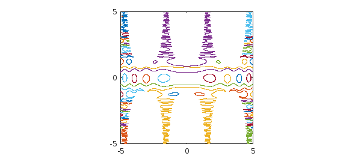
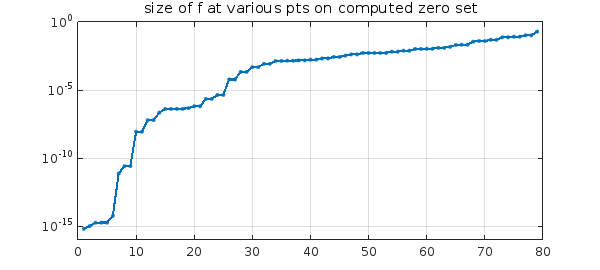
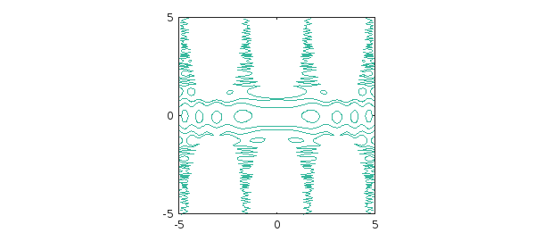

Warwick Tucker has shown me a beautiful example (unpublished). He considers the bivariate function $$ f(x,y) = \sin(\cos(x^2)+10\sin(y^2)) - y\cos(x) $$ in the square $-5\le x, y \le 5$. What is the zero set of this function?
In Chebfun2 we see that $f$ has rank 3:
f = chebfun2(@(x,y) sin(cos(x.^2)+10*sin(y.^2))-y.*cos(x),[-5 5 -5 5])
f =
chebfun2 object
domain rank corner values
[ -5, 5] x [ -5, 5] 3 [ 1.1 1.1 -1.7 -1.7]
vertical scale = 6
The roots command finds the elegant zero set.
tic c = roots(f); plot(c,'linewidth',1) axis([-5 5 -5 5]), axis square toc
Elapsed time is 12.739323 seconds.

Chebfun has found 79 components (the mathematically exact number would be even),
size(c)
ans = Inf 79
each of them parametrized by $s\in [-1,1]$,
domain(c)
ans =
-1 1
and each component is represented by a polynomial of the same painfully high degree (i.e., c is an array-valued chebfun), even though some of them are very simple,
length(c)
ans =
3756
Though Chebfun2 roots can sometimes get outstanding accuracy, that has not happened in this case. To get an idea of the accuracy, suppose we find the 79 points corresponding to these curves at the arbitrary sample point $s=0.5$ and then evaluate $f$ at these 79 points. In principle the result should be a vector of 79 numbers close to machine epsilon, give or take a few powers of 10 since $f$ has large derivatives, but in fact, many of the numbers are much bigger than that:
p = c(0.5,:);
fp = f(p);
semilogy(sort(abs(fp)),'.-')
title('size of f at various pts on computed zero set')
ylim([1e-16 1]), grid on

A much faster way to see the zero set is with the Chebfun2 contour command:
tic contour(f,[0 0],'linewidth',1) axis([-5 5 -5 5]), axis square toc
Elapsed time is 0.380119 seconds.
